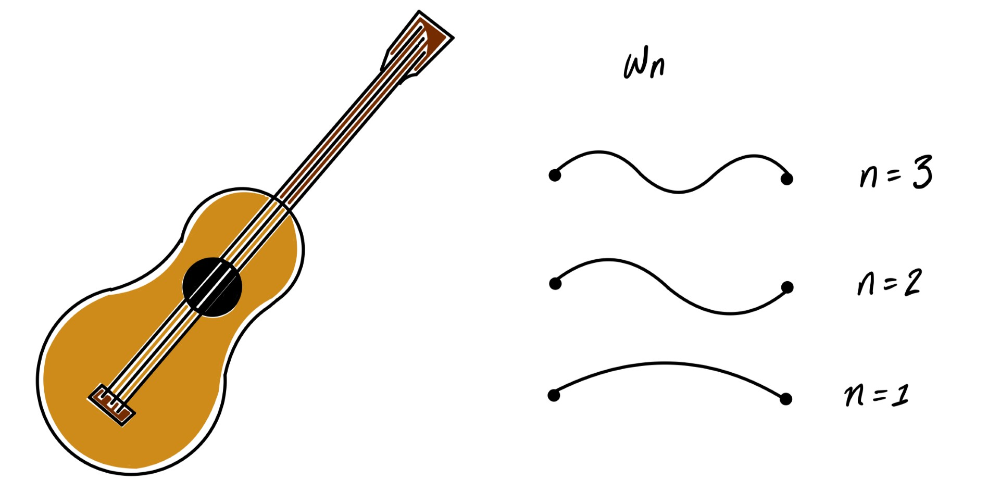
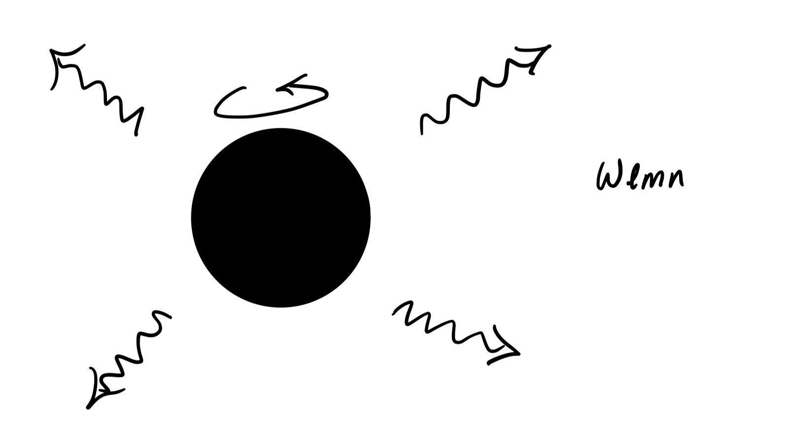
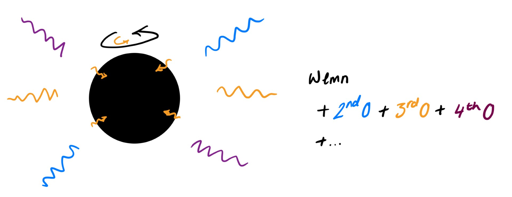

Black Hole Nonlinearities
Each string on a guitar has a set of characteristic resonant frequencies called normal modes. Those frequencies are labelled by a mode number, here 'n'.
Black holes also have a set of characteristic frequencies, called quasinormal modes. They are quasinormal as opposed to normal because they have a characteristic decay time as well as a characteristic real frequency.
Those quasinormal modes are solutions linearised gravitational perturbation on a black hole background. So these frequencies will completely describe a very small amount of gravitational waves coming from a perturbed black hole.
These modes are an exact solution only in the limit where the perturbation is very small. They are accurate to linear order in the size of the perturbation, and the physical solution will include other contributions.

So for a gravitational wave signal from merging binary black holes, the very end part of the signal where the remnant black hole relaxes into stationarity should be well described by these quasinormal modes.
The problem is that the power in the gravitational wave signal decreases as the signal becomes more confidently linear. We would like to be able to analytically model earlier parts of the signal, or at least to understand how accurate a linear model is at those times. For this reason, we study the nonlinear components of the signal.
Those other contributions are at higher order in the size or amplitude of the perturbation, and can be studied using analytic perturbation theory as well as numerical methods.